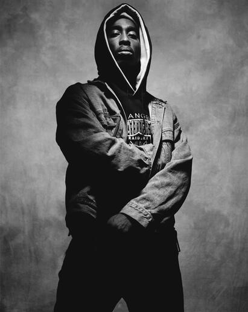

Tupac Shakur
Rapper, ator e compositor

1971 - 1996
Sobre
Tupac Amaru Shakur (nascido Lesane Parish Crooks,Nova Iorque, 16 de junho de 1971 — Las Vegas, 13 de setembro de 1996), mais conhecido pelos seus nomes artísticos 2Pac, Makaveli ou apenas Pac, foi um rapper, ator e compositor estadunidense, considerado por muitos como um dos melhores e mais importantes rappers de todos os tempos.Em 2010, ele já havia vendido pelo menos 75 milhões de cópias pelo mundo.Além de ser músico, Tupac também foi ator e ativista social.A maioria das suas canções tratam sobre como crescer no meio da violência e da miséria nos guetos, o racismo, os problemas da sociedade e os conflitos com os outros rappers.Antes de entrar para a carreira artística, ele era um roadie e dançarino de hip hop alternativo
Rankings
2002
Forbes magazine ranked Shakur at 10th among top-earning dead celebrities. 2003
MTV's viewers voted Shakur the greatest MC.
2005
Shakur was voted No.1 on Vibe's online poll of "Top 10 Best of All Time". 2006
MTV staff placed him second on its list of "The Greatest MCs Of All Time". 2012
The Source magazine ranked him No. 5 among "The Top 50 Lyricists". 2007
the Rock and Roll Hall of Fame placed All Eyez on Me at No. 90 and Me Against the World at No. 170. 2010
Rolling Stone magazine placed Shakur at No. 86 among the "100 Greatest Artists". 2020
All Eyez on Me was ranked No. 436 on Rolling Stone's list of the "500 Greatest Albums Of All Time.
© Copyright - Todos os direitos reservados by Ahnert